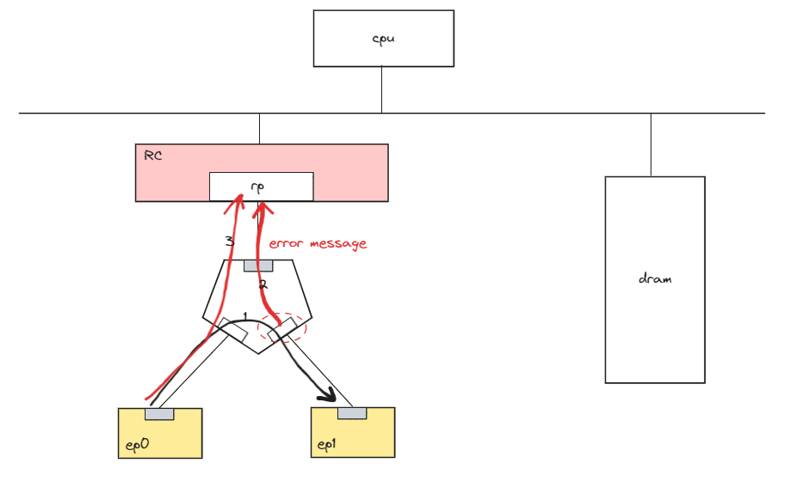

AER
[toc]
Overview
在使用PCIe协议作为通信管道时候，任何位置都有可能出错，而PCIe关注的则是下图中虚线框内的部分，其他部分的错误，则由上层应用来进行处理。

错误分类
pcie 将错误分成两大类， Uncorrectable errors 和 Correctable errors，其中 Uncorrectable errors 又被分成 Fatal 和 Non-Fatal。
pcie 将错误处理分成两种模式：baseline capability 和 Advanced Error Reporting capability。其中 baseline capability 是所有 pcie 都需要支持的，而 aer 是可选的。
Correctable errors 是指 pcie 自身可以修正的错误，比如 pcie 的 DLLP 会对数据包加上 LCRC ，并使用重传机制来修正传输过程中出现的 LCRC 错误，因此可以不需要软件参与。 Correctable errors 的上报对于软件来说主要是用来检测、统计 pcie hierarchy 的状态。
相对的 Uncorrectable errors 就是指 pcie 自身无法修正的错误，需要由软件去处理。pcie 将 Uncorrectable errors 分成 Fatal 和 Non-Fatal，其中 Non-Fatal 错误可以简单的理解成是某一个 tlp 发生了问题，可能设备驱动自己就可以处理这些错误，而 Fatal 错误（与 pci 的 SERR# 类似）更多的是硬件链路的问题，这个时候整个 segment（后面会讲）可能都无法正常使用了，并且需要去 reset 整个 pcie device 才能恢复。这也是为什么要将Uncorrectable errors 再进行细分的原因，尽可能地缩小影响范围。
每层可能出现的错误


上面列出了物理层、数据链路层和传输层的各种错误，并标识了默认配置下这些错误是 Correctable errors 还是 Fatal 或者 Non-Fatal 的。
这里需要注意的是，对于 Non-Fatal 和 Fatal 的错误严重级别判定可能是和 platform 相关的，比如 Malformed TLP 默认情况是一个 Fatal 错误，但是 Malformed TLP 看起来并不会对系统或者 pcie 设备产生非常大的影响，因此 aer 提供了寄存器，软件可以设置Uncorrectable errors 为 Fatal 或者 Non-Fatal 。
同时 aer 也提供寄存器可以单独设置 mask 某个错误的上报，常见比如 Correctable errors 是 pcie 自身可以处理的错误，软件可能并不需要这些信息，mask 掉还可以节省一些带宽。
错误上报
pcie 提供两种错误上报机制，一种是 Completion Status 另一种是 error Messages（in-band）。
Completion Status
对于 non-posted 的传输，Completion Header 中包含 Completion Status 用于返回错误状态。这是唯一一种错误上报的方法可以让 Requestor 可以直接关联相应的错误到具体某一个 request TLP 上。

如下图，ep0 发送一个 mem read tlp 想要读取 ep1 的信息（1），这个时候 ep1 可以因为暂时的原因，比如数据还没有准备好，可以给 ep0 返回一个 UR 的 Completion tlp（2），ep0 的 app logic 可以选择隔一段时间再向 ep1 发出请求，或者记录下这一次 mem read tlp 信息并发送 error message 告知 rp（3）。
error Messages
error Messages 的包格式如下，可以看到 error Messages 是直接路由到 rp 的，需要 rp 去处理，其中 error message 中包含了 Requester ID 信息，rp 会将这个 Requester ID 保存起来，方便软件追踪问题。

如下图，仍然是 ep0 发送一个 mem read tlp 想要读取 ep1 的信息（1），但是这个 tlp 发送到 switch 右侧的 port 时就已经发生错误，这个时候 ep1 就收不到这个 tlp，由 switch 记录下这个 tlp 信息并向 rp 发送 error message（2） 。ep0 由于长时间收不到应答（completion timeout）也将向 rp 发送 error message（3）。

错误记录
pcie 在处理错误时会尽量的将错误信息记录下来，方便软件处理的时候更容易找到错误的源头。
错误记录和错误上报类似，同样有两种方式，一种是device status，一种是AER。
Device Status
对于不支持 aer 的 pcie 设备，只能通过 Device Status 状态寄存器来保存错误的信息，如下，只有一个简单的标志。
部分错误也会映射到 PCI status （软件上的向后兼容）寄存器中：

AER
aer 大大扩展了错误记录的能力，如下 aer 提供的 status 寄存器可以更详细的记录发生了哪个错误，并且对于 Transaction Layer 产生的错误，也会将具体出错的 TLP 的 header 信息保存到寄存器中，软件可以借助这个信息定位到具体发生错误的 tlp ：